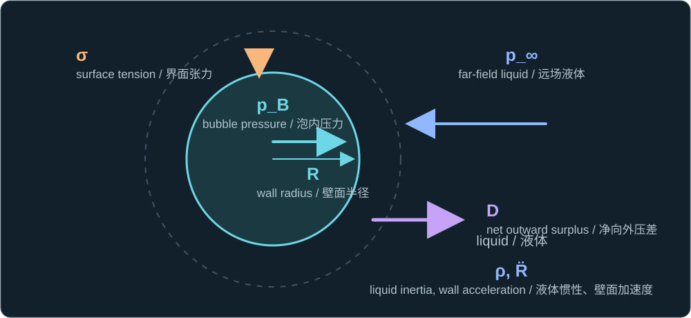
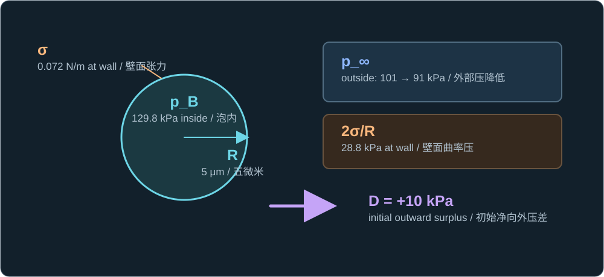

Historical lesson/review. Use the complete textbook course for the current study order. Former Chapters 4 and 5 are now Appendixes A and B.
历史课程／复习材料。当前学习顺序请使用完整教材课程。原第四、五章现为附录 A、B。
You correctly identified the delay caused by liquid inertia. Now make the driving force precise. For a clean spherical bubble, let pB be its inside pressure, p∞ the surrounding liquid pressure far away, σ surface tension, and R the radius. The outward pressure surplus is
D = pB − p∞ − 2σ/R.

The pressure-surplus arrow D points outward; p_B, p_∞, σ, R, liquid inertia ρ, and wall acceleration are labeled where they act.
净压差 D 的箭头指向外侧；p_B、p_∞、σ、R、液体惯性 ρ 与壁面加速度都标在其作用位置。
The first two terms form a pressure difference. The last is the curvature penalty for one spherical liquid–gas interface. A bubble at rest can have pB > p∞ and still be in balance when D = 0.
In the basic spherical, incompressible model, when the wall speed is zero, ρR R̈ = D. Thus positive D gives outward acceleration; negative D gives inward acceleration. This statement is about acceleration, not an immediate change of the radius or velocity.
Change the outside pressure
For a 5 μm bubble in clean water with σ ≈ 0.072 N/m, the capillary pressure 2σ/R is about 28.8 kPa. Suppose the bubble is initially at rest with p∞ = 101 kPa and pB = 129.8 kPa. Its pressure difference is exactly balanced. If p∞ drops to 91 kPa while pB and R have not yet changed, then D = +10 kPa: the liquid initially accelerates outward even though the bubble's inside pressure did not rise.

The numbers are attached to their physical locations: pressure inside, pressure in the liquid outside, capillary pressure at the wall, and the resulting outward surplus.
数值标在对应的物理位置：泡内压力、外侧液体压力、壁面的毛细压力，以及最终的净向外压差。
Once the wall moves, liquid inertia and viscous resistance enter the full Rayleigh–Plesset balance. The simple surplus D remains useful for reasoning, provided you keep track of the current radius and wall velocity. A falling D can slow growth before the radius turns around, exactly as you described in Lesson 1.
One check
A clean spherical bubble is initially at rest and in pressure balance. Its inside pressure and radius stay unchanged for the next instant, but the surrounding liquid pressure rises. Which way does the bubble boundary initially accelerate, and why?